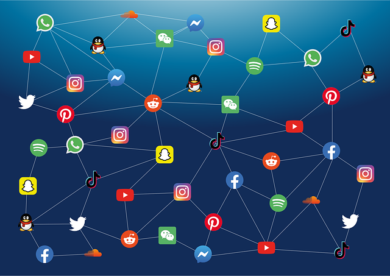

ESPACE PUBLIC ET VIE PRIVEE DES MINEURS A L'HEURE DES RESEAUX SOCIAUX : l'exemple de TikTok
De quelle manière TikTok a-t-il changé la démarcation entre la vie privée et l'espacehe ? Quelles sont les
implications pour la protection des mineurs ?
RETOUR A LA PAGE D'ACCUEIL
Analyse de l'article de Dominique Cardon : Le design de la visibilité. Un essai de cartographie du web 2.0
De quelle manière TikTok a-t-il changé la démarcation entre la vie privée et l'espacehe ? Quelles sont les implications pour la protection des mineurs ?
 Dans un contexte d’explosion du nombre de plateformes d’interaction et de la diversité des fonctionnalités qu’elles proposent, l’article offre une vision éclaircie des modes d’exposition de soi sur ces plateformes. A cet effet, Dominique Cardon dessine une cartographie de la visibilité dans les différentes pratiques sur le web 2.0, selon le degré d’identité réelle et projetée, d’être et de faire. Le terme « web 2.0 » – dit aussi « web participatif » et popularisé en 2004 par Tim O’Reilly – désigne toutes les techniques, fonctionnalités et usages qui ont simplifié et rendu plus interactif de World Wide Web, ouvrant à tous les fonctionnalités du web. Le diagramme construit par Cardon illustre la distance entre l’identité réelle et l’identité numérique que les utilisateurs modulent à travers leurs pratiques numériques, mais aussi que les plateformes guident à travers leur design. Tout au long de l’article, la construction de l’identité numérique apparaît à la rencontre de deux volontés : l’image de soi transmise et la structuration de l’interface des plateformes. De là découlent trois modèles de visibilité : celui du paravent, celui en clair-obscur et celui du phare. On passe de l’un à l’autre à mesure que la visibilité augmente et se forge à partir d’informations de plus en plus individuelles et personnelles (goûts, centres d’intérêt, activités, etc.).
La notion qui nous intéresse particulièrement ici est le modèle de visibilité en clair-obscur. Elle prend tout son sens au regard
de son origine purement artistique. En effet, elle réfère initialement aux oeuvres montrant un contraste important entre des zones
claires et des zones sombres. Selon l’intensité de la clarté et de l’ombre, la transition d’une zone à l’autre est plus ou moins
fluide, créant ainsi des nuances de gris. Le procédé se retrouve dans la peinture dès la Grèce antique. Il vise à reproduire
des variations de relief ou de profondeur. L’aspect du « contraste » entre clair et sombre apparaît lorsque
la photographie en noir et blanc est reconnue comme un art à part entière.
En réalité, le modèle en clair-obscur est une métaphore de l’étroitesse des liens sociaux numériques dans la vie réelle.
Il caractérise l’ouverture du modèle du paravent – où l’appariement des personnes se fait sur la base d’attributs
objectivables (localisation, situation familiale…) proche de leur identité réelle via un moteur de recherche critériel –
à des aspects plus personnels de l’identité des personnes. Les plateformes fonctionnant ainsi sont nommées Social Networking Sites
(SNS). Ainsi, la liste d’amis sur la plateforme devient l’outil de navigation central : en donnant accès aux traces de
visites des proches, le réseau de l’individu s’élargit aux profils que ceux-ci ont consultés. Ces amis d’amis voient eux-mêmes
les traces de visites de ceux ayant lu leur page, les mettant de fait en relation. Comme l’écrit l’auteur, « Sur
ces plateformes, la visibilité des personnes est relative : claire pour les proches, en pénombre pour les autres. »
Il faut comprendre que l’absence de moteur de recherche critériel protège le profil des personnes d’une publicité totale et leur
permet, simultanément, de se révéler plus ouvertement à leur réseau d’amis proches. Les zones plus claires contiennent donc
les proches pour lesquels la personne est nettement visible tandis que les zones sombres concentrent les inconnus pour
lesquels l’individu est moins visible, voire invisible.
Pour continuer, ce concept s’applique de façon évidente aux réseaux sociaux, plus exactement à ceux de mise en relation. En
effet, dans la vie réelle, toute discussion avec un proche conduit à lui partager des informations personnelles. Dans l’espace
numérique, les sites cherchent à reproduire cette aspect des relations sociales et incitent donc à publier régulièrement des
informations personnelles relatives aux activités, aux émotions, aux envies du moment. Outre les phrases aguicheuses comme
« Que fais-tu en ce moment ? » sur Twitter, c’est surtout la relative protection vis-à-vis des regards inconnus
qui encourage une telle exposition de soi. Effectivement, l’appariement par zonage relationnel préalable et non par recherche
catégorielle éloigne les profils des personnes n’appartenant pas au réseau relationnel direct et indirect des individus. Une
étude citée dans l’article sur les usages de Facebook par 1 400 étudiants de première année de la Michigan State University
aboutit au résultat suivant : 93 % des enquêtés pensent que leurs amis étudiants regardent leur profil, 86 % les
amis de leur classe… et les chiffres baissent à mesure que les personnes concernées sont éloignées du cercle social proche de
l’individu. Cela révèle une véritable impression de « cercle privé » sur la plateforme en raison de la nécessité d’un
préalable lien social réel. Le sentiment de s’adresser en majorité à des amis proches et réellement connus favorise la diffusion
d’informations personnelles et, pourtant, révélatrices de l’identité profonde de l’individu.
L’ingéniosité de ces plateformes a sans aucun doute été d’afficher la liste des amis de chaque profil. Les personnes sont soumises
au jugement de leurs proches dans leur faire (propos, publications, actions sur les photos, etc.) et dans leur être (informations
sur l’identité réelle) sur la plateforme. En conséquence, elles sont contraintes au réalisme puisque les amis peuvent vérifier
l’exactitude de ce qui est divulgué sur la plateforme. La présence de la liste d’amis atteste de la véracité des informations
sur le profil et en renforce la fiabilité perçue. Elle représente une forme de validation de l’identité du profil.
D’un autre côté, il en découle une perte de privacy ( que l'on pourrait traduire par intimité) : cela oblige à exposer
sa véritable identité. Étant donné que le regard des proches empêche de modifier radicalement son identité réelle, les
publications sont toujours reliées de près ou de loin à une réalité que les proches peuvent confirmer. On observe un véritable
conflit entre la dissimulation et le dévoilement de l’identité réelle, mais aussi entre l’identité réelle et l’image de soi que
l’on veut transmettre.
L’article soulève un paradoxe majeur dans le modèle en clair-obscur : pour étendre son réseau social, il est nécessaire
de fournir toujours plus d’informations personnelles sur son profil. Néanmoins, soulignons que l’auteur est imprécis sur les
raisons qui poussent les individus à élargir leur liste de contacts. Une première manière d’allonger sa liste d’amis est d’élargir
son réseau aux espaces sociaux institutionnels tels que le lieu de travail, l’école, l’université, les clubs et autres. Ces cas
de figure valident la connaissance préalable du contact. Toutefois, ils ouvrent à de nouvelles possibilités de mise en relation.
De fil en aiguille, la liste des amis inclut de plus en plus de connaissances éloignées. Les données personnelles sont alors plus
exposées au regard et au jugement ; par désir de préserver leur vie privée, les utilisateurs occulteront de fait une part de
la réalité dans leur profil, si bien que la fiabilité du profil se détériore.
Comme pour accentuer les nuances, les SNS offrent la possibilité de réguler certains paramètres de confidentialité. Il est
ainsi possible de dissimuler son adresse électronique, sa date de naissance, son adresse, son statut marital ; de ne
rendre visible son contenu qu’à certains contacts triés sur le volet ; de n’autoriser que les amis à voir son profil,
etc. Ces fonctionnalités précisent la démarcation entre la zone claire des proches et la zone sombre des inconnus :
les amis et proches sont formellement définis comme ceux ayant accès à toutes les données ; les autres sont inconnus.
D’une certaine façon, ces paramètres résolvent le dilemme que l’image de soi pose face à l’identité réelle.
Pour conclure, les SNS façonne l’exposition de la vie privée au moyen astucieux de fonctionnalités et de structuration sur leur interface. En s’appuyant sur les interconnaissances réelles et la volonté de créer des liens sociaux, ils invitent leurs utilisateurs à divulguer des informations personnelles tout en garantissant leur authenticité par la pression des proches et le sentiment de protection contre les regards extérieurs au cercle privé. Par le modèle en clair-obscur, ils permettent une gradation de la visibilité d’un profil en fonction de sa proximité sociale réelle avec d’autres individus, expliquant ainsi la tranquillité d’esprit de certains concernant l’usage de leurs données.